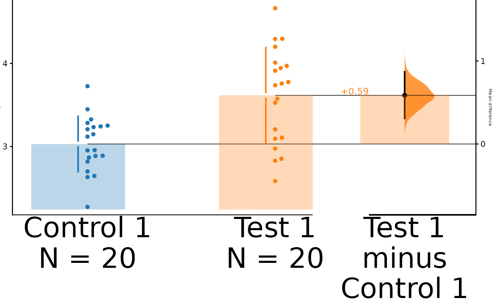
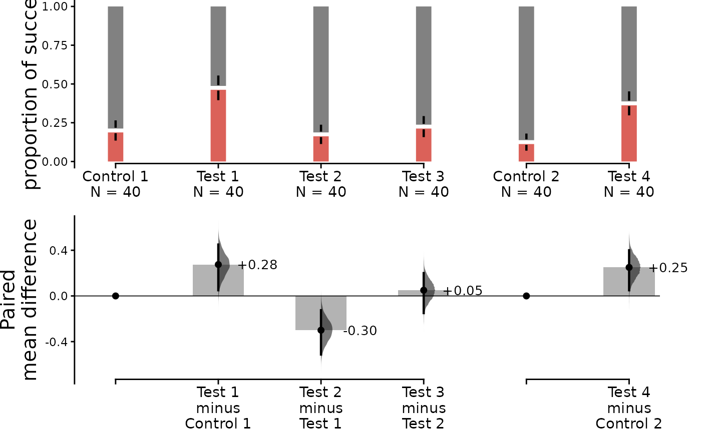

Controlling plot aesthetics is very simple in dabestr. An integral part to the design of dabestr is to allow its users to freely adjust the various components of a DABEST estimation plot, allowing for the most ideal looking plot to be produced.
Getting started
At this point, we assume that you have already obtained the
dabest_effectsize_obj. To add and adjust specific plot
components, simply add it as a argument into the
dabest_plot() function.
dabest_plot(
dabest_effectsize_obj,
float_contrast = TRUE,
plot_component = "adjustment_value"
)Adjusting Text
All text elements in the estimation plot can be adjusted. This includes the value, the size and even removal of the text elements completely.
Size
The following parameters are responsible for adjusting the size of the text elements.
-
swarm_x_text: Default 11. Numeric value determining the font size of the x-axis of the swarm plot. -
swarm_y_text: Default 15. Numeric value determining the font size of the y-axis of the swarm plot. -
contrast_x_text: Default 11. Numeric value determining the font size of the x-axis of the contrast plot. -
contrast_y_text: Default 15. Numeric value determining the font size of the y-axis of the contrast plot.
dabest_plot(
dabest_twogroup_obj.mean_diff,
float_contrast = TRUE,
swarm_x_text = 30,
swarm_y_text = 1,
contrast_x_text = 30,
contrast_y_text = 5
)
Content
The following parameters are responsible for adjusting the content of the text elements.
-
swarm_label: Default “value” or “proportion of success” for proportion plots. Label for the y-axis of the swarm plot. -
contrast_label: Default “effect size”, based on the effect sizes as given ineffect_size(). Label for the y-axis of the contrast plot. -
delta2_label: Default NULL. Label for the y-label for the delta-delta plot.
dabest_plot(
dabest_twogroup_obj.mean_diff,
float_contrast = TRUE,
swarm_label = "I love estimation statistics.",
contrast_label = "I love it more than you do!"
)Adjusting Visual Elements
Visual elements refer to the shapes, lines, symbols or other visual representations that convey data and relationship in a plot. Many of these elements can be adjusted in dabestr.
Markers
The following parameters are responsible for adjusting the properties of various markers in the plot.
-
raw_marker_sizeDefault 1.5. Numeric value determining the size of the points used in the swarm plot. -
raw_marker_alphaDefault 1. Numeric value determining the transparency of the points in the swarm plot. -
raw_bar_widthDefault 0.3. Numeric value determining the width of the bar in the sankey diagram. -
raw_marker_spreadDefault 2. The distance between the points if it is a swarm plot. -
raw_marker_side_shiftDefault 0. The horizontal distance that the swarm plot points are moved in the direction of theasymmetric_side.. -
tufte_sizeDefault 0.8. Numeric value determining the size of the tufte line in the swarm plot. -
es_marker_sizeDefault 0.5. Numeric value determining the size of the points used in the delta plot. -
es_line_sizeDefault 0.8. Numeric value determining the size of the ci line in the delta plot.
A <- dabest_plot(dabest_twogroup_obj.mean_diff, float_contrast = TRUE,
swarm_label = "", contrast_label = "",
raw_marker_size = 1, raw_marker_alpha = 1)
B <- dabest_plot(dabest_twogroup_obj.mean_diff, float_contrast = TRUE,
swarm_label = "", contrast_label = "",
raw_marker_size = 2, raw_marker_alpha = 0.5)
cowplot::plot_grid(
plotlist = list(A, B),
nrow = 1,
ncol = 2,
labels = "AUTO"
)
Axes
The following parameters are responsible for adjusting the y-axis limits for the rawdata axes and contrast axes of the plot. By adjusting the range, it gives rise to the effect of zooming in or out of the plot.
-
swarm_ylimDefault NULL. Vector containing the y-limits for the swarm plot. -
contrast_ylimDefault NULL. Vector containing the y-limits for the delta plot. -
delta2_ylimDefault NULL. Vector containing the y-limits for the delta-delta plot.
If your effect size is qualitatively inverted (ie. a smaller value is
a better outcome), you can invert the vector passed to
contrast_ylim.
dabest_plot(dabest_multigroup_obj.mean_diff, float_contrast = FALSE,
contrast_label = "More negative is better!",
swarm_ylim = c(1, 5), contrast_ylim = c(0.7, -1.2))
Palettes
The following parameters are responsible for adjusting the plot palettes of the plot.
-
custom_paletteDefault “d3”. String. The following palettes are available for use: npg, aaas, nejm, lancet, jama, jco, ucscgb, d3, locuszoom, igv, cosmic, uchicago, brewer, ordinal, viridis_d.
npg <- dabest_plot(dabest_unpaired_props.mean_diff,
swarm_label = "", contrast_label = "",
custom_palette = "npg")
nejm <- dabest_plot(dabest_unpaired_props.mean_diff,
swarm_label = "", contrast_label = "",
custom_palette = "nejm")
jama <- dabest_plot(dabest_unpaired_props.mean_diff,
swarm_label = "", contrast_label = "",
custom_palette = "jama")
locuszoom <- dabest_plot(dabest_unpaired_props.mean_diff,
swarm_label = "", contrast_label = "",
custom_palette = "locuszoom")
cowplot::plot_grid(
plotlist = list(npg, nejm, jama, locuszoom),
nrow = 2,
ncol = 2
)
Misc
-
sankeyDefault TRUE. Boolean value determining if the flows between the bar charts will be plotted.
dabest_plot(dabest_paired_props.mean_diff, sankey = FALSE, raw_bar_width = 0.15)
-
flowDefault TRUE. Boolean value determining whether the bars will be plotted in pairs.
dabest_plot(dabest_paired_props.mean_diff, flow = FALSE, raw_bar_width = 0.15)
-
asymmetric_sideDefault “right”. Can be either “right” or “left”. Controls which side the swarm points are shown.
right <- dabest_plot(dabest_twogroup_obj.mean_diff, float_contrast = FALSE,
swarm_label = "", contrast_label = "",
asymmetric_side = "right")
left <- dabest_plot(dabest_twogroup_obj.mean_diff, float_contrast = FALSE,
swarm_label = "", contrast_label = "",
asymmetric_side = "left")
cowplot::plot_grid(
plotlist = list(right, left),
nrow = 1,
ncol = 2
)
-
show_delta2Default FALSE. Boolean value determining if the delta-delta plot is shown. -
show_mini_metaDefault FALSE. Boolean value determining if the weighted average plot is shown. If False, the resulting graph would be identical to a multiple two-groups plot. -
show_zero_dotDefault TRUE. Boolean value determining if there is a dot on the zero line of the effect size for the control-control group. -
show_baseline_ecDefault FALSE. Boolean value determining whether the baseline curve is shown.
dabest_plot(dabest_multigroup_obj.mean_diff, float_contrast = FALSE,
show_baseline_ec = TRUE)